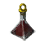
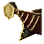

+
Trace of Death
🔗
+
How to Get
+
Item Box
Imperial Trace Box
[Daily] [Alchemy] Striving Towards Imperial Delivery
+
Nodes
🔗
Star's End - Excavation
Cheapest Route To: Grána (16CP)
(3CP) Lake Flondor
(1CP) White Wood Forest
(3CP) Tooth Fairy Forest
(2CP) Loopy Tree Forest
(3CP) Ash Forest
(3CP) Star's End
(1CP) Star's End - Excavation
Cheapest Route To: Calpheon (18CP)
(2CP) Gabino Farm
(3CP) North Kaia Pier
(1CP) Calpheon Castle Site
(3CP) Calpheon Castle
(2CP) Brelin Farm
(3CP) Calpheon Northwestern Outpost
(3CP) Star's End
(1CP) Star's End - Excavation
+
Processing
🔗
+
Heating
Seleth Weapons
+
Used In Recipe
+
Alchemy
🔗
 Elixir of Death
2
+
Processing
🔗
+
Simple Alchemy
🔗
Piece of Image
100
+
Workshop
🔗
+
Shipyard
🔗
 Frigate: Enhanced Black Plating
150
Frigate: Streamlined Black Plating
150
Sailboat: Enhanced Black Plating
100
And More...
+
notes
-notes
 Star's End - Excavation
Star's End - Excavation